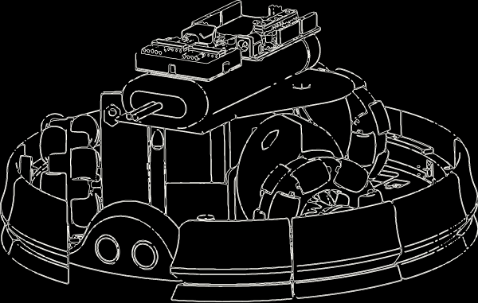

- E D U C A T I O N -
Northeastern University - Boston, MA
University of North Carolina at Asheville & North Carolina State University - Asheville, NC
Central Piedmont Community College - Charlotte, NC
- E X P E R I E N C E -
Research Collaborator @ University of North Carolina - Asheville
- Developed a comprehensive UI for real-time EEG signal processing, enabling seamless data collection from a BCI Headset and supporting flexible data loading options.
- Implemented signal processing capabilities, including customizable preprocessing and support for model loading, training, and testing with datasets and live data streams.
Research Collaborator @ North Carolina State University
- Developed a drone-based computer vision system to combat Lygodium Microphyllum in Florida, deploying it on an NVIDIA Jetson Nano with a ZED 2i stereo camera.
- Applied visual odometry and depth estimation techniques, enhancing spatial awareness for improved navigation and efficient data collection
- Implemented segNet for semantic segmentation and SSD-MobileNet V2 for precise object detection, ensuring accurate identification of Lygodium microphyllum to facilitate targeted interventions.
Engineering Intern @ Auria Solutions
- Led the development of a comprehensive program to automate the process of graph generation in Excel, leveraging data from multiple CSV files originating from a thermocouple data logger.
- P R O J E C T S -
(In progress...)
SLAM Implementation on Boston Dynamics Spot

- Acquired multi-modal datasets including LiDAR, stereo camera, and odometry data using Spot, a quadruped robot.
- Designed and implemented custom Python scripts utilizing gRPC for efficient data querying.
- Developing a SLAM system utilizing state-of-the-art algorithms such as RTAB-Map and Fast LIO-SLAM to process and integrate Spot's sensor data.
IMU-Based Dead Reckoning


- Designed and implemented a sensor fusion algorithm for IMU-based dead reckoning, integrating accelerometer, gyroscope, and magnetometer data to estimate 2D trajectories.
- Developed drivers for a sensor data acquisition system in ROS2 to synchronize IMU and GPS inputs, capturing precise vehicle dynamics over varied driving routes and refining navigation accuracy through data preprocessing.
- Calibrated magnetometer data to correct for hard-iron and soft-iron distortions, utilizing ellipse fitting and outlier detection through Isolation Forest to ensure high-fidelity heading estimates.
- Developed a multi-filter solution for yaw angle estimation, calibrated through Mean Squared Error (MSE) minimization, effectively fusing gyroscope and magnetometer data to leverage both short-term responsiveness and long-term accuracy.
- Demonstrated expertise in ROS-based multi-sensor integration, filtering methods, and sensor fusion principles, translating raw sensor data into actionable insights for autonomous navigation applications.
IEEE SoutheastCon Hardware & Design Competition 2024

- Earned first place in the design competition and obtained the top 3 scores in the hardware competition, demonstrating exceptional innovation and technical proficiency.
- Engineered and deployed a state machine in Python and C++ coupled with ROS, integrating various electro-mechanical subsystems seamlessly and conducting thorough testing to ensure system robustness.
- Directed the development of a computer vision system employing color detection techniques for specific object identification, enhanced by morphological operations to effectively filter image noise.
- Implemented the use of contours and contour properties to determine 3D pose and position, translating image data into real-world coordinates for accurate object localization.
- Applied polynomial regression to minimize localization error, utilizing experimental data collection to enhance the accuracy and reliability of the system.
- Conducted precise camera calibration to minimize distortion on a wide field-of-view camera, ensuring accurate and undistorted visual data.
IEEE SoutheastCon Hardware Competition 2023

- Led the development of a computer vision system deployed on a Raspberry Pi 4B platform, augmented with a Coral USB Accelerator, delivering real-time object analysis capabilities.
- Employed principal component analysis (PCA) to accurately assess the orientation of diverse objects, such as rubber duckies and 3D-printed cylinders, enhancing overall object recognition accuracy.
- Integrated EfficientDet2 to precisely determine the object class, enabling seamless identification and classification of target objects within the system.
- Leveraged the robust OpenCV library to implement a placement verification mechanism, ensuring objects were positioned correctly and ready for smooth progression to the subsequent processing stage.
Sumo Bot Competition

- Secured second place in a sumo bot competition, showcasing robust performance and strategic prowess.
- Designed and manufactured a fully functional battle bot, encompassing 3D modeling & printing, machining, electrical wiring, and programming to ensure comprehensive functionality.
- Implemented a triangular omnidirectional wheel motion system to enhance maneuverability and agility, ensuring swift and precise movement.
- Developed a 360° bumper sensor system using parallel-in serial-out shift registers and a sonar sensor, enabling instant detection of incoming attacks from all directions around the bot.
- Approached the project with an unconventional yet successful methodology, emphasizing innovation and effective problem-solving.
Autonomous Block Stacking Competition

- Earned first place by developing the fastest and most efficient program for autonomous block stacking, demonstrating superior speed and accuracy in execution.
- Programmed a Quanser 4-degree-of-freedom robot paired with an RGBD camera in Simulink and MATLAB, enabling autonomous identification and precise stacking of specific blocks using color filtering in the CIELAB (L*a*b*) color space.
- Thoroughly researched and implemented comprehensive documentation to optimize system performance and ensure seamless integration of all functionalities.
- Integrated a flip-off enabled vision system utilizing corner detection to initiate the robot's search, pick, and place actions based on a visual cue.
- S K I L L S -
